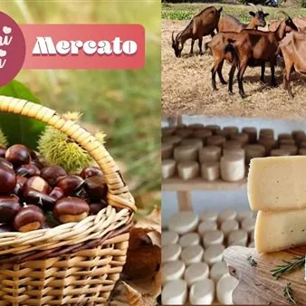

dom 4 ott · dalle 09:30
Agribus delle Valli - Edizione speciale AltRoute
Domenica 4 ottobre 2026 - Dalle ore 9:30 alle 16:30 Ritrovo presso il parcheggio della vecchia stazione dei treni di Cividale del Friuli Il progetto AltRoute, che vede il Comune di San Leonardo tra i capofila, mette al centro l’enogastronomia come patrimonio culturale…
 Indicazioni
Indicazioni
- Costi e prenotazioni
- Costo non indicato · Prenotazione non indicata
- Programma
- Programma da verificare. Apri la fonte ufficiale per orari e possibili aggiornamenti.
- In caso di maltempo
- Nessuna indicazione specifica pubblicata.
- Note
- Acquisito automaticamente dalla fonte.
L’EVENTO
Descrizione completa
AGRIBUS DELLE VALLI - EDIZIONE SPECIALE AltRoute – Alternative Tourism Paths: sapori e prodotti in festa AltRoute è un progetto di cooperazione transfrontaliera Italia – Croazia, il cui scopo principale è quello di sviluppare forme di turismo sostenibile nelle aree rurali meno battute dal turismo di massa, connettendo territori italiani e croati tramite la valorizzazione dell'enogastronomia locale e i principi dell'economia circolare.
Il progetto, che vede il Comune di San Leonardo tra i capofila, mette al centro l’enogastronomia come patrimonio culturale immateriale condiviso , riconoscendola come leva per generare nuove opportunità di crescita, inclusione e innovazione sociale.
In quest'ottica nasce questa edizione speciale dell'Agribus delle Valli che si terrà domenica 4 ottobre 2026. Programma:
Inizieremo con la visita e degustazione presso l'Azienda Agricola Val Furlane ad Altana ( San Leonardo), dove il Signor Franco ci accoglierà per farci scoprire i suoi formaggi caprini freschi, semistagionati e stagionati
Ci sposteremo poi in comune di Pulfero per un pranzo che vedrà protagonista la trota grazie al menù elaborato per noi dalla storica Trattoria alla Trota.
La trota delle Valli del Natisone rappresenta un’eccellenza gastronomica legata alla purezza delle acque e ad una radicata tradizione di itticoltura sostenibile, tanto che questo pesce è diventato un ingrediente simbolo del territorio delle Valli. Orari:
Ore 09.30: ritrovo a Cividale del Friuli (stazione vecchia) e partenza in pullman
Ore 10 visita dell’azienda “ Val Furlane"
Ore 12.00: Pranzo alla Trattoria alla Trota
Ore 13.30 Proseguimento per la Fiera Mercato – "Sapori nelle Valli"
Ore 16/ 16.30 rientro a Cividale Menù del pranzo proposto dalla Trattoria alla Trota:
CROSTINO CON TROTA
LASAGNETTA CON TROTA E PESTO
TROTA AL FORNO CON POLENTA
STAKANJIE E VERDURA CRUDA
STRUDEL DI MELE
1 bicchiere di vino e 1/2 l di acqua Concluderemo la giornata alla Fiera Mercato “Sapori nelle Valli” a San Pietro al Natisone, manifestazione promossa dall’omonima Associazione “Sapori nelle Valli ” , nata dalla volontà dei produttori locali di unirsi per valorizzare il proprio territorio ed i propri prodotti, certificandoli con un marchio che garantisce origine e qualità.
Qui potrete passeggiare liberamente tra gli stand per degustare e acquistare prodotti locali di stagione. Accompagnatrice: Sabrina Pellizon Tour leader e Guida Naturalistica/Ambientale Escursionistica regionale. Prenotazione obbligatoria, ingresso gratuito
Scopri i protagonisti dell’evento: visita i loro siti per conoscere storia, prodotti e attività:
- Trattoria alla Trota: sito ufficiale
- Sapori nelle Valli: sito ufficiale Evento sostenuto dal progetto europeo AltRoute, finanziato dal Programma Interreg VI-A ItaliaCroazia - Capofila: Comune di San Leonardo
IL PROGRAMMA
Programma e orari
Appuntamenti raccolti dalle fonti elencate. Dove manca un orario, non è ancora disponibile in questa scheda.
Programma pubblicato
- Ore 09.30: ritrovo a Cividale del Friuli (stazione vecchia) e partenza in pullman
- Ore 12.00: Pranzo alla Trattoria alla Trota
- Ore 13.30 Proseguimento per la Fiera Mercato – "Sapori nelle Valli"
INFORMAZIONI UTILI
Prima di partire
- Controllare la fonte prima di partire.
ORGANIZZAZIONE